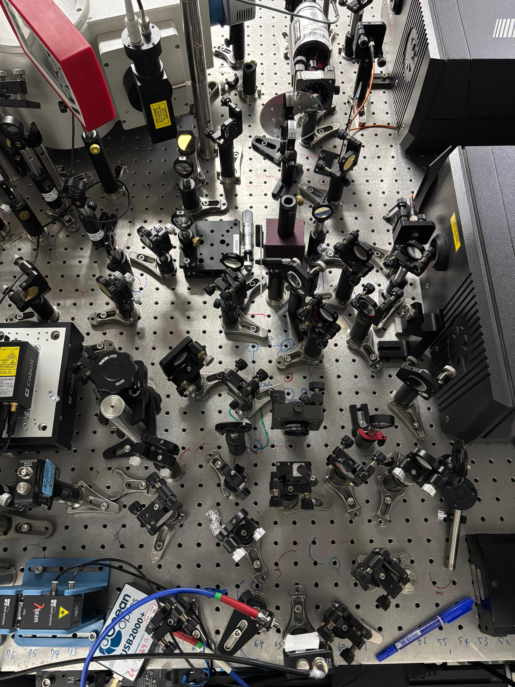
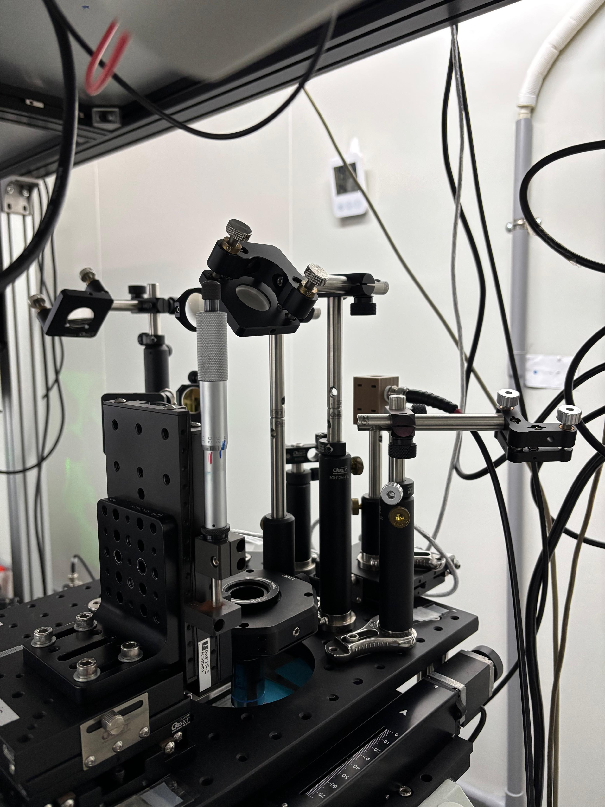

Nonlinear Raman Spectroscopy • Ultrafast Lasers • Optical Instrumentation
Development of synchronized two-color nonlinear Raman spectroscopy platforms with emphasis on laser synchronization, spatial and temporal beam overlap, polarization control, modulation, microscope integration, and sensitive optical detection.
I developed stimulated Raman scattering (SRS) and coherent anti-Stokes Raman scattering (CARS) spectroscopy systems using two synchronized Ti:sapphire laser sources.
The work focused on the experimental requirements needed for nonlinear Raman generation, including stable mode locking, repetition-rate and phase locking, spatial beam overlap, temporal synchronization, polarization control, optical filtering, and sensitive signal detection.
The systems were integrated with an inverted microscope to provide a foundation for label-free vibrational spectroscopy and future nonlinear Raman microscopy.


My work included alignment and synchronization of picosecond and femtosecond Ti:sapphire lasers, determination of the time-zero position, beam combination, polarization optimization, and delivery of the two excitation beams into the microscope.
Auto- and cross-correlation measurements were used to evaluate temporal overlap and synchronization stability. The average timing jitter was approximately 0.61 ps under the tested conditions.
The experimental platform also incorporated optical filtering, photodiode and PMT detection, lock-in amplification, acousto-optic modulation, and delay-stage control for nonlinear Raman measurements.
Coherent anti-Stokes Raman scattering was investigated using dodecane as a test sample because of its strong C–H stretching vibrations.
A clear anti-Stokes signal was observed near 591 nm using a 710 nm pump beam and an 890 nm Stokes beam. Careful optimization of spatial overlap significantly increased the detected signal intensity.
The optimized CARS peak exhibited a full width at half maximum of approximately 8.3 cm⁻¹. The signal decreased when the temporal delay was shifted by ±1 ps from the optimized time-zero position and disappeared when either excitation beam was blocked, supporting its assignment as a nonlinear CARS signal.
Further optimization of beam combination and relative polarization produced a strong anti-Stokes signal near 599 nm using pump and Stokes wavelengths of 718.5 and 903.4 nm, respectively.
For stimulated Raman scattering measurements, the Stokes beam was intensity-modulated using an acousto-optic modulator and lock-in detection was used to search for modulation transfer to the pump beam.
The SRS optical system was successfully constructed and aligned, including beam modulation, synchronization, microscope delivery, and sensitive detection.
Under the tested conditions, however, a reliable resonant SRS signal was not confirmed. The observed lock-in response was most consistent with experimental background or artifacts such as scattered modulated light, electronic pickup, imperfect filtering, or thermal effects.
This work identified the major experimental parameters requiring further optimization, including spatial overlap, temporal delay, optical filtering, detector configuration, lock-in phase, and systematic control measurements.